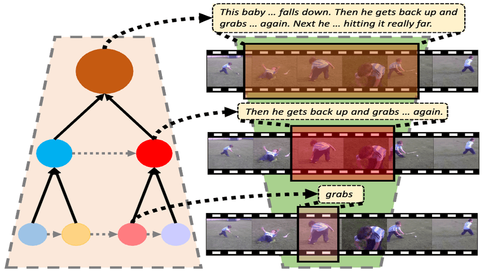

|
Chaolei Tan I'm a first-year Ph.D. student at Dept. of Computer Science & Engineering (CSE), The Hong Kong University of Science and Technology (HKUST), advised by Prof. Long Chen. I obtained my Master's degree from Sun Yat-sen University (SYSU) in 2024, where I was supervised by Prof. Jian-Fang Hu and Prof. Wei-Shi Zheng. Prior to that, I also received my Bachelor's degree from SYSU in 2021. My research interests lie in computer vision, machine learning and multimedia, with a special focus on developing models that can learn general and high-level knowledge about the world from multi-modality data like videos and language. |
{kind=link}
News2025-06: Two papers are accepted to ICCV 2025. 2024-12: Two papers are accepted to ACM MM 2024 and AAAI 2025. 2024-02: Two papers are accepted to CVPR 2024. 2023-02: Two papers are accepted to CVPR 2023. 2022-05: I win the championship of PIC Challenge HCVG Track at ACM MM 2022. 2021-06: I receive the Best Paper Award of CVPR 2021 PIC Workshop. |
Selected Publications* indicates equal contributions. See the full list in Google Scholar |
|
|
SynopGround: A Large-Scale Dataset for Multi-Paragraph Video Grounding from TV Dramas and Synopses
Chaolei Tan*, Zihang Lin*, Junfu Pu, Zhongang Qi, Wei-Yi Pei, Zhi Qu, Yexin Wang, Ying Shan, Wei-Shi Zheng, Jian-Fang Hu ACM International Conference on Multimedia (ACM MM), 2024 Paper/ Website A large-scale video dataset with densely annotated paragraph timestamps to enable the new research direction of multi-paragraph video grounding on both long-form videos and long-term queries. |
|
|
Siamese Learning with Joint Alignment and Regression for Weakly-Supervised Video Paragraph Grounding
Chaolei Tan, Jianhuang Lai, Wei-Shi Zheng, Jian-Fang Hu Computer Vision and Pattern Recognition (CVPR), 2024 Paper First attempt to explore weakly-supervised setting of video paragraph grounding, where a siamese learning framework jontly conducting feature alignment and boundary regression is proposed. |
|

|
Hierarchical Semantic Correspondence Networks for Video Paragraph Grounding
Chaolei Tan, Zihang Lin, Jian-Fang Hu, Wei-Shi Zheng, Jianhuang Lai Computer Vision and Pattern Recognition (CVPR), 2023 Paper Introducing hierarchical modeling into video paragraph grounding by hierarchically aligning semantic correspondence across videos and paragraphs for temporal decoding at multiple granularities. |
|
|
ReferDINO: Referring Video Object Segmentation with Visual Grounding Foundations
Tianming Liang, Kun-Yu Lin, Chaolei Tan, Jianguo Zhang, Wei-Shi Zheng, Jian-Fang Hu International Conference on Computer Vision (ICCV), 2025 Paper/ Website Our first attempt to adapt pretrained visual grounding foundation models to Referring Video Object Segmentation (RVOS). |
|
|
Ranking Distillation for Open-Ended Video Question Answering with Insufficient Labels
Tianming Liang, Chaolei Tan, Beihao Xia, Wei-Shi Zheng, Jian-Fang Hu Computer Vision and Pattern Recognition (CVPR), 2024 Paper Tackle the incomplete annotation issues in open-ended video question answering with ranking distillation. |
|
|
Collaborative Static and Dynamic Vision-Language Streams for Spatio-Temporal Video Grounding
Zihang Lin, Chaolei Tan, Jian-Fang Hu, Zhi Jin, Tiancai Ye, Wei-Shi Zheng Computer Vision and Pattern Recognition (CVPR), 2023 Paper To model the collaborative static and dynamic vision-language streams for better spatio-temporal video grounding. |
Education |
 |
Ph.D. in Computer Science and Engineering HKUST, Clear Water Bay Aug. 2024 - Present Advisor: Prof. Long Chen |
|
M.Eng. in Computer Science and Technology Sun Yat-sen University, Guangzhou Sep. 2021 - Jun. 2024 Advisors: Prof. Jian-Fang Hu and Prof. Wei-Shi Zheng |
|
|
B.Eng. in Telecommunication Engineering Sun Yat-sen University, Guangzhou Sep. 2017 - Jun. 2021 GPA: 4.12/5.0, Ranking: 2/81 |
Experiences |
|
Research Intern in Computer Vision Tencent ARC Lab, Shenzhen Jul. 2023 - Jun. 2024 Mentors: Dr. Junfu Pu and Dr. Zhongang Qi |
|
|
Research Intern in Computer Vision Tencent WeChat, Guangzhou Jul. 2021 - Jan. 2023 Mentor: Mr. Tiancai Ye |
Honors and Awards
|
|
This website is built on top of the awesome Jon Barron template. |